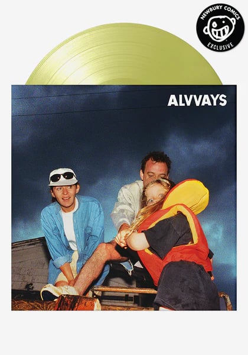

Some of my colleagues and I were recently discussing how we approach shows and music that we are obsessed with. Do you restrict yourself from going in too deep to try to spread out the enjoyment and make it last? Or do you go all in, listening or watching incessantly, every chance you get? I’m firmly in the latter camp, which means I inevitably get to a point with any new-to-me music where I can no longer stand it. Like, it almost makes me feel nauseous to listen to it. I cannot defend this approach, but I also can’t fight it. My latest victim was The Beths’ 2022 album, Expert in a Dying Field, which I discovered when one of my colleagues brought the vinyl into the office.
My colleagues share some more obsession-worthy music below, as well as a couple of thought-provoking books.

Albums we listen to over and over

After a two-year musical hiatus, Miley Cyrus will be releasing her newest album, Endless Summer Vacation, on March 10. The album is highly anticipated, especially following the success of its first single, “Flowers.” As a millennial, I remember Miley from her Hannah Montana days and almost feel as though I have grown up with her throughout her musical career. I am thrilled that she is finally back. I’m looking forward to her new, inevitably catchy tracks—and hoping that, just maybe, they’ll give listeners a juicy inside look at her relationship with and divorce from Liam Hemsworth.
Annie Hanigan
marketing coordinator
Go to Annie’s pick


If you’re not an existing Alvvays fan, you might recognize them from their hit song on every 2010s indie playlist, “Archie, Marry Me.” The Canadian four piece’s third studio album, Blue Rev, came out in October, but I’m still listening to it weekly. Some of the best melodies in indie pop backed with elements from 80s and 90s indie, illustrative lyrics, and Molly Rankin’s voice combine to make something nostalgic but also somehow modern. Pitchfork calls it “cool and righteous.” It’s kind of all over the place, but it works so well. And it’s a must-listen for anyone who’s also feeling all over the place right now.

Go to Katie’s pick
Katie Edwards
design manager

Rebekah Ayers
editorial associate
Cloud Cuckoo Land is not exactly new in the book world, but it still
deserves a spot on your 2023 reading list. This book brilliantly demonstrates the interconnectedness of history, and Anthony Doerr seamlessly blends different centuries and characters with writing that is poetic, bold,
and moving.
Go to Rebekah’s pick
It’s been two years since my father’s passing, and not a day goes by that I don’t think about the meaning of life and the legacies we leave behind when, as it does, our time comes. The book When Breath Becomes Air was published postmortem by a brilliant young neurosurgeon. Paul Kalanithi, a nonsmoker, was diagnosed with stage IV metastatic lung cancer in his mid-30s, disrupting a promising career and cutting short a future with his newborn daughter. His fascination with the human brain, literature, and spirituality led him to pursue several degrees I didn’t even realize existed. He was destined to become a leader in his field and in many ways still was, leaving in his legacy a book that confronts a topic we often don’t think about until we have to: the meaning of life. I highly recommend reading it with a friend or book club, as each chapter inspires meaningful thoughts and conversations.
Go to Tiana’s pick
Tiana Pigford
marketing manager


David:
Youth of America by Wipers
Brittany:
Special by Lizzo
Becky:
Liquid Tension Experiment by Liquid Tension Experiment
Erik:
Dude Ranch by Blink-182
Lys:
The Suburbs by Arcade Fire
Luke:
The Soul Cages by Sting
Jen B:
Darkness on the Edge of Town by Bruce Springsteen
Megan:
La Linda by Tei Shi
Morgan:
A Fever You Can’t Sweat Out by Panic! at the Disco
Tracy:
The Miseducation of Lauryn Hill by Lauryn Hill
Ugne:
Zaba by Glass Animals